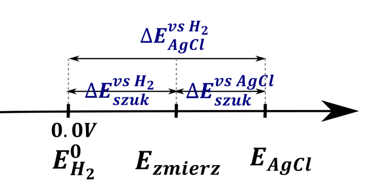

Potencjał zdefiniowany jest względem potencjału elektrody wodorowej, na której mamy reakcję
\[2H^{+} + 2e^{-} \rightleftarrows H_{2}\]
Potencjał tej elektrody jest zdefiniowany jako zero. Do obliczeń używa się potencjałów zdefiniowanych względem tej elektrody, a więc wydaje się oczywistym, że aby wyznaczyć potencjał innej elektrody najlepiej byłoby zmierzyć potencjał tej elektrody względem standardowej elektrody wodorowej. Równanie Nernsta dla standardowej elektrody wodorowej wygląda nieciekawie:
\[E = E^{0} + \frac{0.059}{2}\log\frac{\left\lbrack H^{+} \right\rbrack^{2}}{\frac{p_{H_{2}}}{p_{0}}}\]
\[E^{0} = 0\]
Gdyż o ile stężenie \(H^{+}\) równe \(1\ mol·dm^{- 3}\) jesteśmy w stanie zrobić, o tyle problem jest z utrzymywaniem stałego ciśnienia wodoru równego 1bar –wyobraźmy sobie pompkę akwariową, która utrzymuje dokładnie ciśnienie wodoru jeden bar, jest to praktycznie niemożliwe, gdyż taka pompka zawsze doprowadza gaz mniej lub bardziej nierównomiernie, do tego ciśnienie tego gazu zależy od producenta pompki.
Więc robi się problem z elektrodą wodorową –tzn. – w praktyce nie jesteśmy w stanie skonstruować standardowej elektrody wodorowej.
W celu ominięcia tego problemu buduje się elektrody odniesienia, które mają względnie stały potencjał oraz łatwo je zrobić. W praktyce takie elektrody odniesienia robi się dwie
Chlorosrebrowa
\[AgCl + e^{-} \rightarrow Ag + Cl^{-}\]
W praktyce jest to blaszka srebrna, zanurzona w roztworze zawierającym jony \(Cl^{-}\) w obecności \(AgCl\) . Równanie Nernta dla tej elektrody ma postać:
\[E = E_{Ag\text{/}AgCl}^{0} + \frac{0.059}{1}\log\frac{1}{\left\lbrack Cl^{-} \right\rbrack}\]
Kalomelowa
\[Hg_{2}Cl_{2} + 2e^{-} \rightarrow 2Hg + 2Cl^{-}\]
Czyli w sumie rtęć, zanurzona w roztworze z jonami \(Cl^{-}\) w obecności \(Hg_{2}Cl_{2}\) .
\[E = E^{0} + \frac{0.059}{2}\log\frac{1}{\left\lbrack Cl^{-} \right\rbrack^{2}}\]
Widzimy, iż wyrażenie na potencjał obu elektrod odniesienia zależy tylko i wyłącznie od stężenia jonów \(Cl^{-}\) . Stężenie to jest bardzo łatwo stabilizować, używając stężony roztwór \(KCl\) lub \(NaCl\) nad osadem \(NaCl\) lub \(KCl\) , wówczas reakcja powoduje wytrącenie dodatkowej ilości ciężko rozpuszczalnej soli lub jej rozpuszczenie, ale tak, aby zachować stał stężenie tej soli, będące roztworem nasyconym. Znając temperaturę jesteśmy w stanie powiedzieć, jaka jest rozpuszczalność, a z tego jesteśmy w stanie obliczyć potencjał rzeczywisty elektrody.
Przeliczanie potencjałów zmierzonych względem elektrody on kalomelowej czy chlorosrebrowej na potencjał względem elektrody wodorowej jest trywialne. Najłatwiej jest zrobić graf, na którym umieszczamy potencjał elektrody odniesienia, obliczony równaniem Nernsta, a potem nanosimy zmierzony potencjał względem elektrody odniesienia

Widać, iż potencjał elektrody szukanej względem elektrody wodorowej możemy uzyskać wykorzystując wzór:
\[E_{szukanej}^{vs\ H_{2}} = E_{odniesienia}^{vs\ H_{2}} + E_{szukanej}^{vs\ odniesienia}\ \]
Oczywiście, jako elektrodę odniesienia możemy wykorzystywać dowolną elektrodę o ile możemy ją łatwo zbudować i ma ona stabilny potencjał.
Przykładem zadania maturalnego z wykorzystaniem równania Nernsta jest:
Przykładem elektrody halogenosrebrowej jest elektroda bromosrebrowa, której działanie opisano równaniem:
\[AgBr_{(S)} \rightleftarrows Ag_{(S)} + Br_{aq}^{-}\]
Potencjał tej elektrody zależy od stężenia jonów bromkowych i w temperaturze 298K wyraża się równaniem:
\[E_{Ag\text{/}AgBr} = E_{Ag\text{/}AgBr}^{0} - 0.059\log{\lbrack Br^{-}\rbrack}\]
Standardowy potencjał tej elektrody wynosi \(E_{Ag\text{/}AgBr}^{0} = 0.071V\)
W temperaturze 298K potencjał elektrody bromosrebrowej zanurzonej w równacze z osadem tej soli był równy \(E_{Ag\text{/}AgBr}^{\ } = 0.431V\) .
Oblicz wartość iloczynu rozpuszczalności bromku srebra \(K_{So}^{AgBr}\) w temperaturze 298 K.
Z równania Nernsta możemy obliczyć wartość stężenia jonów bromkowych:
\[E_{Ag\text{/}AgBr} = E_{Ag\text{/}AgBr}^{0} - 0.059\log\left\lbrack Br^{-} \right\rbrack\]
\[0.431 = 0.071 - 0.059\log\left\lbrack Br^{-} \right\rbrack\]
\[0.059\log\left\lbrack Br^{-} \right\rbrack = - 0.431 + 0.071\]
\[\log\left\lbrack Br^{-} \right\rbrack = \frac{( - 0.431 + 0.071)}{0.059}\]
\[\left\lbrack Br^{-} \right\rbrack = 10^{\frac{- 0.431 + 0.071}{0.059}} = 7.912·10^{- 7}\]
Stężenie jonów \(\left\lbrack Ag^{+} \right\rbrack\) musi być równe stężeniu \(\lbrack Br^{-}\rbrack\) z uwagi na stechiometrię procesu rozpuszczania:
\[AgBr \rightleftarrows Ag^{+} + Br^{-}\]
\[\left\lbrack Ag^{+} \right\rbrack = \left\lbrack Br^{-} \right\rbrack = 7.912·10^{- 7}\]
Zapisując wyrażenie na iloczyn rozpuszczalności, \(K_{so}^{AgBr}\) i wstawiając wartości stężeń dostajemy wartość tego iloczynu:
\[K_{so} = \left\lbrack Ag^{+} \right\rbrack\left\lbrack Br^{-} \right\rbrack = \left( 7.912·10^{- 7} \right)·\left( 7.912·10^{- 7} \right) = 6.26·10^{- 13}\]